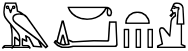

除了常见的由右至左书写的书写系统（阿拉伯字母、希伯来字母、西非书面字母、叙利亚字母、它拿字母等等）之外，还有许多其他由左至右（left-to-right, LTR）书写的书写系统曾经由右至左（right-to-left, RTL）书写，包括中文、日文、圣书体、提非纳文字、古斯堪地纳维亚语以及许多其他古代文字。
由于在Unicode标准中，这些文字是强LTR方向的，我们不能简单地使用Unicode双向文本算法来正确显示它们。此外，其中一些文字在由右至左书写时会对字形进行镜像。
本文提出了使用HTML和CSS为这些语言生成从右到左的文本的方法。
实际上的用例很少。你可能偶尔会遇到由右至左书写的台湾或图阿雷格语文字，但大多数用例都是为了重现古代用法。
古代文字，例如古埃及圣书体，在现代通常由左至右书写。然而，最初的铭文或书面资料通常是由右至左书写的。就埃及而言，纪念碑上圣书字的方向是根据整体的美观来决定的。在一个人的画像旁边你还会看到圣书字从两边向中间的人脸水平排列。不仅如此，字形也会被镜像，这样你也可以朝着任何字形的正面或开头阅读。
因此，现代埃及古物学者写作

的序列在原版中从右到左排序，而且字形是被镜像的。

虽然你可能很少需要这样做，但如果你想的话，我们将在这里介绍如何让文本看起来像原始文本。
就中文和日文而言，你会遇到的大多数现代文本片段都很短，并且通常设计为古风，例如为了让游客回想古代中国和日本。
对于日语，sci.lang.japan新闻组上的一篇有趣的文章解释说，在明治时期之前，除非有空间限制，文字通常是直排的。19世纪末，横排开始作为直排的严肃替代品，引发了对行内文字书写方向的初步实验。
明治时代（1868-1912），在横书流行之初，出现了一种短暂的书写方式，称为“右横书”，与现代的书写方式——左横书相反。这和阿拉伯语、希伯来语等语言的由右至左横向书写风格类似，在页面左侧换行……这种形式从未被广泛使用，也没有保留下来。
下图是2000年左右的一份台湾的报纸，这种情况现已很少见。我们可以看到，中间偏右横向书写的标题是从右到左书写的，和与标题下方垂直行的行进方向相同，但它还包括从左到右书写的文本“8.6%”。另请注意，左边图片下方标题中的文本包含多行（而且未与网格对齐），也是由右至左书写的。
上面的用例可以分为两类，而我们下面提出的两种解决方案可以满足这两类用例。
第一种用例，可能也是最有可能出现的一种，是表示说明性文本的简短示例。在这种情况下，如果字符不以相反的顺序显示，则这个例子将失去其意义。例如，如果你得到了错误的文字排列顺序：“文本ⴰⵙⵉⴹⵢⴰⵙ⵰最初是这样写的：ⴰⵙⵉⴹⵢⴰⵙ⵰”，读者会摸不着头脑。因此，在这种情况下，我们希望确保读者看到的始终是反向排列的文字，而我们通过标记语言来做到这一点。
第二种用例是上面的台湾报纸。在某个特定的上下文中，每篇文章的正文都为直排，而我们希望标题和说明文本由右向左横向书写。在另一种情况下，我们可能希望显示相同的文章，但更改布局，让所有横向书写的文字（如标题和说明文字）从左到右排列，就像在台湾或日本的大多数报纸里一样。在这种情况下，文字方向只是一种风格的选择，因此我们需要使用CSS。
本章总结了解决方案的要点，请阅读全文以了解更多详细信息。
将文本包裹在行内的bdo元素中并将dir属性设置成rtl。
<p>The inscription was <bdo lang="ber" dir="rtl">ⴰⵙⵉⴹⵢⴰⵙ⵰</bdo></p>
实时预览
The inscription was ⴰⵙⵉⴹⵢⴰⵙ⵰
如果你的文本包含需要从左到右排列的字符，把这些字符嵌套在另一个bdo元素中，并将dir设置为ltr。（这就是人们写包含阿拉伯语、希伯来语等语言的标记语言的方式，只不过他们使用的标签通常不是bdo。）
<p>Bidi Chinese example: <bdo lang="zh-hant" dir="rtl"><bdo dir="ltr">8.6%</bdo>受訪者沒頭路</bdo></p>
实时预览
Bidi Chinese example: 8.6%受訪者沒頭路
如果你需要对字形进行镜像，最好使用能够根据文本方向自动镜像字形的字体。如果没有的话，你可以使用CSS变换，而不是覆盖书写方向。
bdo { transform: rotateY(180deg); display: inline-block; }
<p>The text <span lang="ber">ⴰⵙⵉⴹⵢⴰⵙ⵰</span> was originally written like this: <bdo lang="ber" dir="ltr">ⴰⵙⵉⴹⵢⴰⵙ⵰</bdo></p>
实时预览
The text ⴰⵙⵉⴹⵢⴰⵙ⵰ was originally written like this: ⴰⵙⵉⴹⵢⴰⵙ⵰
将文本包裹在标签中，将class属性设置为rlo之类的值，并将其与CSS的书写方向属性相关联。对于块元素，使用text-align将其置于容器的右侧。
.rlo { unicode-bidi: bidi-override; direction: rtl; text-align: right; }
<h2 lang="zh-hant" class="rlo">本土化 反成國際化危機</h2>
实时预览
如果文本中有需要从左到右排列的字符，把将这些字符嵌套在bdi元素中，并将class属性设置为lro之类的内容。
.rlo { unicode-bidi: bidi-override; direction: rtl; text-align: right; }
.lro { unicode-bidi: bidi-override; direction: ltr; }
<h2 lang="zh-hant" class="rlo"><bdi class="lro">8.6%</bdi>受訪者沒頭路</h2>
实时预览
对于日语标点符号，你可能需要一种特殊的字体。
本文剩下的部分包含更多的详细信息。
请注意，在标记法中我们没有使用CSS属性来修改书写方向，这和在HTML中处理双向文本的正确做法是一样的。HTML中的标记（markup）已经为你提供了所需的功能，不需要CSS就可以产生所需的效果。使用标记后，无论文本是否有CSS，都会正确显示（对于说明性文本，这通常是我们想要的结果）。
值得注意的是，在下面的所有示例中，文本完全可搜索、可通过语音浏览器阅读等等，因为我们没有弄乱内存中字符的自然顺序。视觉编码方法（也就是以相反的顺序输入字符）会打破这一点。
bdo让文本从右向左显示<p>The right-to-left headline reads: <bdo lang="zh-hant" dir="rtl">準社會新鮮人</bdo></p>
实时预览
The right-to-left headline reads: 準社會新鮮人
bdo元素（bdo是bidirectional override的缩写）会暂停Unicode双向文本算法的自动算法，按照内存中的字符顺序对字符进行排序。我们必须添加dir属性，告诉浏览器字符在显示时的排列顺序。我们将其值设置为rtl。

顺便说一下，对bdo元素应用CSS规则white-space:nowrap很有用，可以避免在换行时bdo元素内的文本重新排序造成的混乱。
<p lang="zh-hant"><bdo dir="rtl"><bdo dir="ltr">8.6%</bdo>受訪者沒頭路</bdo></p>
实时预览
8.6%受訪者沒頭路
这是上文的台湾报纸里的标题，包含了需要在由右向左的文本中由左向右显示的百分比。为了实现这一点，我们将从左到右的内容包裹在另一个bdo元素中，并把dir属性设置为ltr。
这实际上和阿拉伯语和希伯来语等语言使用标记的方式非常相似。对这些语言，我们推荐把所有相反方向的文本用标记包裹，并添加dir属性。标记还会隔离嵌入的文本，保护其免受溢出效应的影响。
大多数可以以LTR和RTL两种顺序排列的古代文字会把字形和书写的方向相适应。
在理想情况下，当基方向（base direction）设置为RTL时，你可以使用自动反转字形的字体。例如，当Junicode字体应用于卢恩字母时就会根据情况自动反转字形。
<p>The Runic inscription was <bdo lang="non" dir="rtl">ᚺᚨᚱᛃᚨ</bdo></p>
如果我们在上面的代码中对用卢恩字母书写的古斯堪地纳维亚语应用RTL覆盖，并且使用Junicode字体，结果如下图所示：
在其他情况下，你可能需要使用如下CSS hack：
bdo { transform: rotateY(180deg); display: inline-block; }
<p>The text <span lang="ber">ⴰⵙⵉⴹⵢⴰⵙ⵰</span> was originally written like this: <bdo lang="ber" dir="ltr">ⴰⵙⵉⴹⵢⴰⵙ⵰</bdo></p>
实时预览
The text ⴰⵙⵉⴹⵢⴰⵙ⵰ was originally written like this: ⴰⵙⵉⴹⵢⴰⵙ⵰
CSS镜像了柏柏尔文本中的字符，同时让文字从右到左显示。

请注意，我们的bdo元素的dir属性设置为ltr，而不是 rtl。其实我们并不一定需要一个bdo元素，只要我们添加了class或id以便CSS识别，span也可以。
如果有嵌入的数字或者其他由左至右书写的文字，这种方法可能会变得有些棘手，但在需要镜像字符的文本中，这几乎不太可能出现。而且，这种方法的优点是尽管显示顺序发生了变化，文本依然可搜索和阅读。
如果在由右至左排列文字时，标点符号需要镜像的话，你可能会遇到一些问题。
让我们以逗号为例。一些古老的日语样本表明逗号本身的形状与现代逗号的形状没有变化，然而位置确实发生了变化——从左下角移动到了右下角。

这种情况很难处理，因为我们无法通过CSS变换来实现（我们不想改变形状）。我们可能需要一种特殊的字体来解决这个问题。

不过，由右至左书写的文本很可能是简短的条目，不包含标点符号。
对于中文，例如上面的台湾报纸，如果你用的是逗号位于字面正中的字体（这对于繁体中文字体来说很常见），就可以避免这个问题。很多古代文字（如腓尼基字母、古匈牙利字母、乌加里特字母等）都使用非空格的分隔符，而这些分隔符通常是对称的，因此也不受这个问题的影响。
样式法用于文本纯粹由于外观原因而沿相反方向排列的情况。在这种情况下，文本是否实际以原始方向呈现并不重要。这往往与排版的偏好有关，对于现代文本而言，这种方法比标记法罕见得多。
将文本用含有class属性为rlo之类的值的元素所包裹，并将其与CSS的书写方向属性相关联。最好使用专用的类名，而不只是向各种不同元素的样式声明里添加额外的CSS属性，将来可以更容易地变更书写方向。
因为这通常和布局相关，在大多数情况下，对书写方向的更改是应用在块元素而不是内联元素上。在这种情况下，你需要确保文本从窗口或容器的右侧开始，所以需要使用CSS的text-align属性。
.rlo { unicode-bidi: bidi-override; direction: rtl; text-align: right; }
<h2 lang="zh-hant" class="rlo">本土化 反成國際化危機</h2>
实时预览
如果文本包含需要由左至右排列的字符，请把这些字符放在一个bdi元素里，并把class设置为lro之类的内容，然后将这个class和CSS规则相关联，使文本由左至右排列。
我们用bdi来确保不会产生溢出效应。
.rlo { unicode-bidi: bidi-override; direction: rtl; text-align: right; }
.lro { unicode-bidi: bidi-override; direction: ltr; }
<h2 lang="zh-hant" class="rlo"><bdi class="lro">8.6%</bdi>受訪者沒頭路</h2>
实时预览
如果字体自动对字符进行反转，即可处理镜像字符的情况。不过，CSS变换的hack可能无济于事，因为它只适用于较短的行内文本。话虽如此，对于使用样式法的场景来说，我们很少需要镜像字符。
刚刚入门？Unicode双向文本算法基础
制作网页